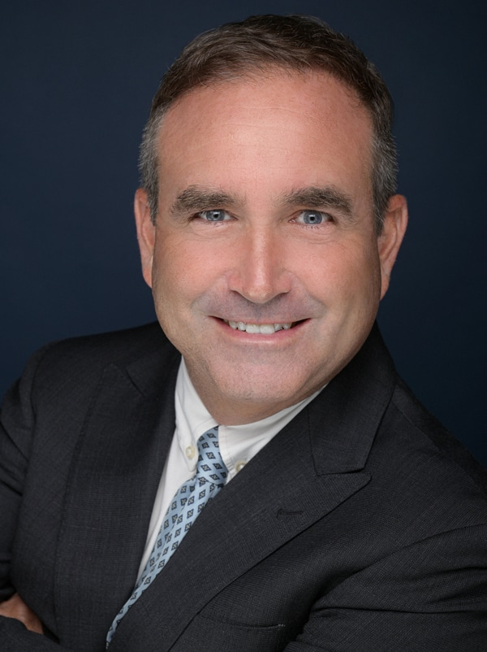

4.4×Injury victims with a lawyer recover $77,600 on average — vs $17,600 without one, per a Martindale-Nolo consumer study.
Serving Austin and Central Texas from our Lakeway office.
$550M+Recovered
Since 199430+ Years
20,000+Cases Handled
50+Trials to Verdict
Avvo 5.0 RatedGoogle GuaranteedMartindale-Hubbell DistinguishedBBB A+National Trial LawyersMillion Dollar Advocates Forum
Car Accident Cases
Types of Cases Our Austin Car Accident Attorneys Represent
Every crash is different — and so is the way insurers try to minimize it. These are the car accident cases we handle for people across Austin and Travis County.
Red Light Accidents
A driver who runs a red light usually hits the side of another car — and a side impact, or T-bone crash, leaves people with the least protection. Proving who had the light takes fast work: security and dash-cam footage and witness statements disappear within days, so we move to lock them down before the other driver's insurer argues the light was yellow.
Car Crashes Involving Drunk Drivers
A criminal DWI case punishes the driver — it doesn't pay your medical bills. Your injury claim is separate, and it can reach beyond the driver's own policy: under Texas's dram shop law, a bar or restaurant that kept serving someone who was obviously intoxicated can share responsibility for the crash.
Rear-End Accidents
Stop-and-go traffic on I-35, MoPac, and US-183 makes rear-end crashes an everyday event in Austin. The driver who hits from behind is usually at fault — but insurers still fight the injuries, because whiplash and back injuries often don't show up for a day or two. Get checked by a doctor, and let us deal with the adjuster.
Rideshare Accidents
Hurt in an Uber or Lyft — as a passenger, another driver, or a pedestrian? Texas law requires $1,000,000 in liability coverage once a rideshare driver accepts a trip, and far less while the driver is only logged in and waiting. Which policy applies turns on what the app was doing at the moment of the crash — and the companies know it. We sort it out.
Chain Reaction Auto Accidents
Multi-car pileups are the hardest crashes to untangle: several drivers, several insurers, and everyone pointing at someone else. Texas divides fault by percentage — you can still recover as long as you're not more than 50% responsible, with your award reduced by your share. We reconstruct the sequence of impacts so the blame lands where it belongs.
Don't see your crash here?
Call anyway. A free review tells you where you stand — whatever kind of crash it was.
Car Accident Attorneys in Austin, TX Open 24 Hours
Crashes don't keep business hours, and neither do we. Call day or night and a real person answers — 24 hours a day, 7 days a week. Se habla español.
1You talk. 60 seconds.
Call or tap the form. A real person — not a phone tree — hears what happened and tells you where you stand. Free, no obligation, no pressure.
2We take it from here.
Every adjuster call, every deadline, the evidence, and help coordinating your medical care. We front every dollar it costs to build your case.
3You get paid.
We push for the maximum and try the case if they won't pay it. No recovery, no attorney fee — and you are never out of pocket along the way.
Don't wait on the clock. In Texas you generally have two years from the crash to file, but the evidence that proves your case — camera footage, skid marks, witnesses — disappears much sooner.
Why Turn to a Car Accident Attorney in Austin After a Crash
The other driver's insurer has adjusters and lawyers working to pay you as little as possible. Here's what changes when you have your own team.
No Fees Unless We Win
You pay nothing up front — ever. We front every cost of building your case, and we only collect an attorney fee if we recover money for you. No recovery, no attorney fee. (Court costs and case expenses may apply and are explained clearly in your agreement before you sign.)
Over $500 Million Won
Since 1994 the firm has recovered $550M+ for injury victims and handled more than 20,000 cases. A few results:
$14,600,000Construction AccidentSettled in 289 days
$8,750,000Premises LiabilitySettled Aug. 2025
$4,500,000Car AccidentSettled in 215 days
$2,500,000Pedestrian AccidentSettled in 193 days
When an insurer insisted the policy limit was the most our client could ever get, we recovered $1,025,000 — $750,000 more than their "maximum" — for an 8-year-old rear-ended by a commercial vehicle.
Prior results do not guarantee a similar outcome. Every case is unique, and results depend on the facts and applicable law.
We Fight to Get You Paid While You Recover

George Z. GoldbergFounding Partner
Your job is to heal. Ours is everything else — every adjuster call, every deadline, the evidence, your medical records, and help coordinating your care.
Founding partner George Goldberg spent his first two years in practice defending airlines and insurance companies in injury litigation before switching sides in 1996 — so when the adjuster calls with a low offer, we already know their next three moves.
4.4xCrash victims with a lawyer recover $77,600 on average vs. $17,600 without one, according to a Martindale-Nolo consumer study.
Award-Winning Accident Attorneys Serving Austin and All of Travis County
The firm's recognitions include a Martindale-Hubbell Distinguished peer rating, The National Trial Lawyers, and the Million Dollar Advocates Forum — and senior partner James Loren has tried more than 50 cases to verdict. Our Austin-area office is in Lakeway, and we represent clients across Austin and all of Travis County.
"I could not be more pleased with the personnel, process, and results I got from working with George Goldberg and his team."
GValerie Harris · Google Review
★★★★★
"It was my first time needing to hire an attorney, and I was really happy with the entire process. Mr. Loren worked tirelessly for me while I recovered."
GCharles Sanchez · Google Review
★★★★★
"Incredibly knowledgeable, great in court, and the settlement was way more than I expected."
GConstance Sanchez · Google Review
Free Car Accident Consultations
Your first conversation is free and confidential, and there's no obligation to hire us. Call any time, or tell us what happened in the 60-second form — either way, you'll know where you stand.
What does it cost to hire you?
Nothing up front — ever. The consultation is free, we front every cost of building your case, and we only collect an attorney fee if we recover money for you. No recovery, no attorney fee. (Court costs and case expenses may apply and are explained clearly in your agreement before you sign.)
The insurance company already offered me money. Should I take it?
Not before a free case review. First offers are low by design — adjusters are trained to settle before you know what your claim is worth. Signing usually ends your claim permanently, even if your injuries get worse. Let us look first; it costs you nothing.
How much is my case worth?
It depends on your medical bills, lost wages, future treatment, and what the crash has taken from your life. Insurers hope you'll guess low. A free case review gives you a realistic range before you accept anything.
How long do I have to file?
In Texas you generally have two years from the crash to file. Evidence disappears far sooner: camera footage gets erased and witnesses move. The sooner we start, the stronger your case.
Will I have to go to court?
Most cases settle without a trial. But insurers track which firms actually try cases — and pay more to avoid facing them. With 50+ trials taken to verdict, we negotiate from strength. If they won't pay fairly, we're ready.
What if I was partly at fault?
You may still have a strong claim. In Texas you can recover as long as you're not more than 50% responsible — your recovery is simply reduced by your share. Don't accept the insurer's version of fault; get a free review first.
Schedule a Free Consultation with Our Austin Car Accident Attorneys
One call, 24/7. Nothing up front, nothing out of pocket, and no fee unless we win.